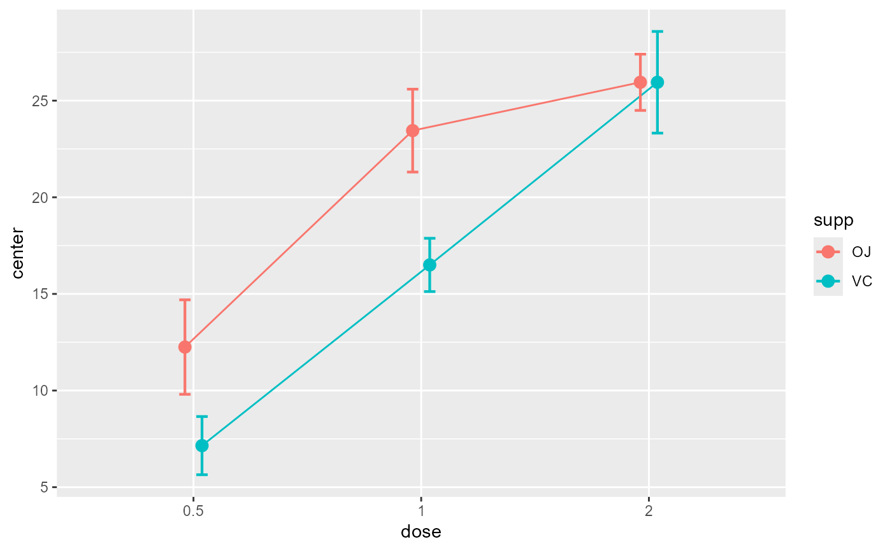

Plot summary statistics with correct error bars.
superbPlot.RdThe function suberbPlot() plots standard error or confidence interval for various descriptive
statistics under various designs, sampling schemes, population size and purposes,
according to the suberb framework. See (Cousineau 2017)
for more.
superbPlot( data, BSFactors = NULL, WSFactors = NULL, factorOrder, variables, statistic = "mean", errorbar = "CI", gamma = 0.95, adjustments = list(purpose = "single", popSize = Inf, decorrelation = "none", samplingDesign = "SRS"), showPlot = TRUE, plotStyle = "bar", preprocessfct = NULL, postprocessfct = NULL, clusterColumn = "", ... )
Arguments
| data | Dataframe in wide format |
|---|---|
| BSFactors | The name of the columns containing the between-subject factor(s) |
| WSFactors | The name of the within-subject factor(s) |
| factorOrder | Order of factors as shown in the graph (in that order: x axis, groups, horizontal panels, vertical panels) |
| variables | The dependent variable(s) as strings |
| statistic | The summary statistic function to use as a string |
| errorbar | The function that computes the error bar. Should be "CI" or "SE" or any function name if you defined a custom function. Default to "CI" |
| gamma | The coverage factor; necessary when |
| adjustments | List of adjustments as described below.
Default is |
| showPlot | Defaults to TRUE. Set to FALSE if you want the output to be the summary statistics and intervals. |
| plotStyle | The type of object to plot on the graph. See full list below. Defaults to "bar". |
| preprocessfct | is a transform (or vector of) to be performed first on data matrix of each group |
| postprocessfct | is a transform (or vector of) |
| clusterColumn | used in conjunction with samplingDesign = "CRS", indicates which column contains the cluster membership |
| ... | In addition to the parameters above, superbPlot also accept a number of optional arguments that will be transmitted to the plotting function, such as pointParams (a list of ggplot2 parameters to input inside geoms; see ?geom_bar2) and errorbarParams (a list of ggplot2 parameters for geom_errorbar; see ?geom_errorbar) |
Value
a plot with the correct error bars or a table of those summary statistics. The plot is a ggplot2 object with can be modified with additional declarations.
Details
The possible adjustements are the following
popsize: Size of the population under study. Defaults to Inf
purpose: The purpose of the comparisons. Defaults to "single". Can be "single", "difference", or "tryon".
decorrelation: Decorrelation method for repeated measure designs. Chooses among the methods "CM", "LM", "CA" or "none". Defaults to "none".
samplingDesign: Sampling method to obtain the sample. implemented sampling is "SRS" (Simple Randomize Sampling) and "CRS" (Cluster-Randomized Sampling).
In version 0.9.5, the layouts for plots are the following:
"bar" Shows the summary statistics with bars and error bars;
"line" Shows the summary statistics with lines connecting the conditions over the first factor;
"point" Shows the summary statistics with isolated points
"pointjitter" Shows the summary statistics along with jittered points depicting the raw data;
"pointjitterviolin" Also adds violin plots to the previous layout
"pointindividualline" Connects the raw data with line along the first factor (which should be a repeated-measure factor)
"raincloud" Illustrates the distribution with a cloud (half_violin_plot) and jittered dots next to it. Looks better when coordinates are flipped
+coord_flip().
References
Cousineau D (2017). “Varieties of confidence intervals.” Advances in Cognitive Psychology, 13, 140--155. doi: 10.5709/acp-0214-z , https://doi.org/10.5709/acp-0214-z.
Examples
# Basic example using a built-in dataframe as data. # By default, the mean is computed and the error bar are 95% confidence intervals superbPlot(ToothGrowth, BSFactors = c("dose", "supp"), variables = "len")# Example changing the summary statistics to the median and # the error bar to 80% confidence intervals superbPlot(ToothGrowth, BSFactors = c("dose", "supp"), variables = "len", statistic = "median", errorbar = "CI", gamma = .80)# Example introducing adjustments for pairwise comparisons # and assuming that the whole population is limited to 200 persons superbPlot(ToothGrowth, BSFactors = c("dose", "supp"), variables = "len", adjustments = list( purpose = "difference", popSize = 200) )# This example adds ggplot directives to the plot produced library(ggplot2) superbPlot(ToothGrowth, BSFactors = c("dose", "supp"), variables = "len") + xlab("Dose") + ylab("Tooth Growth") + theme_bw()# This example is based on repeated measures library(lsr) library(gridExtra) options(superb.feedback = 'none') # shut down 'warnings' and 'design' interpretation messages # define shorter column names... names(Orange) <- c("Tree","age","circ") # turn the data into a wide format Orange.wide <- longToWide(Orange, circ ~ age) # Makes the plots two different way: p1=superbPlot( Orange.wide, WSFactors = "age(7)", variables = c("circ_118","circ_484","circ_664","circ_1004","circ_1231","circ_1372","circ_1582"), adjustments = list(purpose = "difference", decorrelation = "none") ) + xlab("Age level") + ylab("Trunk diameter (mm)") + coord_cartesian( ylim = c(0,250) ) + labs(title="Basic confidence intervals") p2=superbPlot( Orange.wide, WSFactors = "age(7)", variables = c("circ_118","circ_484","circ_664","circ_1004","circ_1231","circ_1372","circ_1582"), adjustments = list(purpose = "difference", decorrelation = "CA") ) + xlab("Age level") + ylab("Trunk diameter (mm)") + coord_cartesian( ylim = c(0,250) ) + labs(title="Decorrelated confidence intervals") grid.arrange(p1,p2,ncol=2)